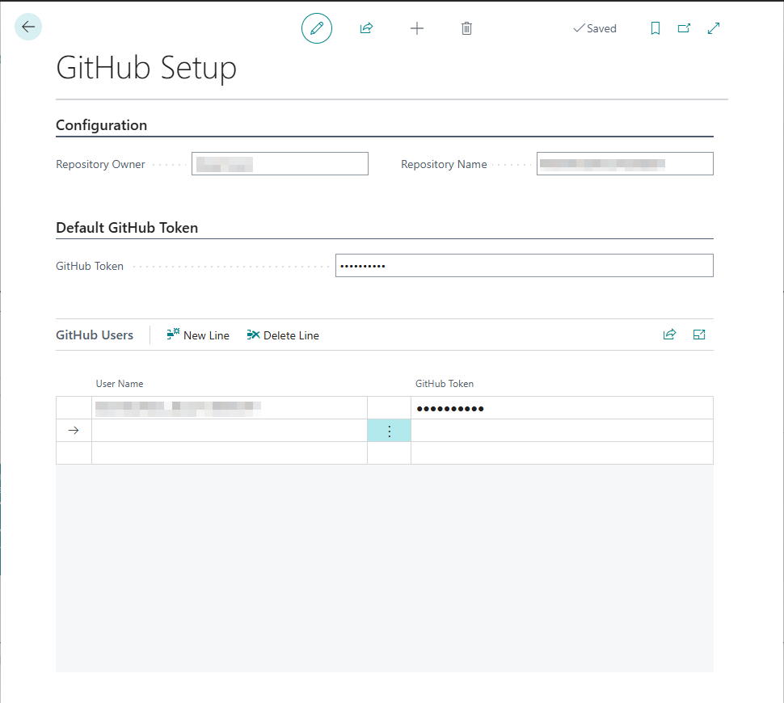
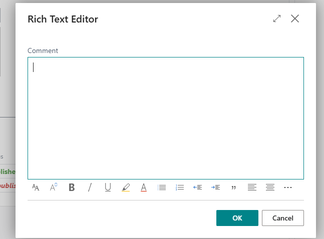
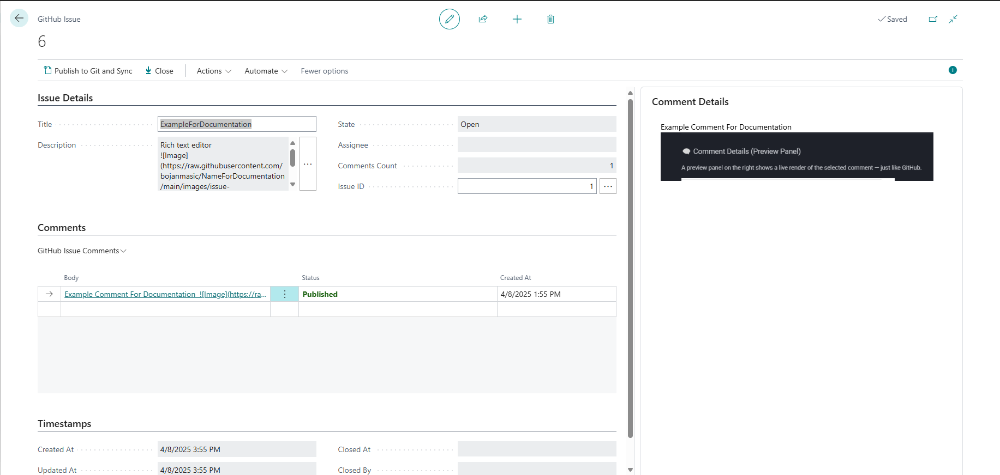
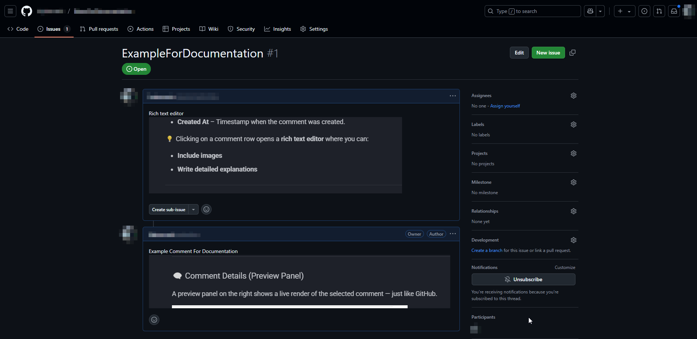

GitHub Integration
This guide explains how to integrate GitHub with Microsoft Dynamics 365 Business Central.
You'll learn how to generate a Personal Access Token (PAT), configure Business Central, manage GitHub issues, and sync everything seamlessly.
Overview
Quick intro about GitHub & Business Central integration, focusing on tasks like issue management, syncing, and user token control.
1. How to Generate a GitHub Personal Access Token
Before using GitHub features in Business Central, you must create a Personal Access Token (PAT) to allow Business Central to access your GitHub repositories.
Step-by-Step Guide
-
Log in to GitHub
Go to https://github.com and sign in. -
Go to Developer Settings
- Click your profile picture → Settings

- Scroll down and click Developer settings

- Click your profile picture → Settings
-
Create a Token
- Click Personal access tokens

- Select Tokens (classic)

- Click Generate new token (classic)

- Click Personal access tokens
-
Configure the Token
- Name:
Business Central Integration Token - Expiration: 30/90 days or
No expiration

- Repository access: Set to
All repositories - Permissions:

Contents: Read and writeIssues: Read and write
- Name:
-
Generate & Save the Token
- Click Generate token

- Copy the token immediately

⚠️ Once you leave the page, the token cannot be retrieved again.
- Click Generate token
🔎 Where to Find the Repository Owner and Repository Name?
In the image below, you can see where to locate the values required for setting up GitHub integration in Business Central:

- 🟥 The circled part indicates the Repository Owner – this is your GitHub username or organization name (e.g.,
Bcility). - 🟥 The highlighted rectangle shows the Repository Name – the actual GitHub repository name (e.g.,
BcilitySupport).
💡 These values should be entered in Business Central under the GitHub Setup section:
- Repository Owner = Bcility
- Repository Name = BcilitySupport
They are used along with your Personal Access Token (PAT) to allow Business Central to connect and interact with your GitHub repositories.
2. Setup in Business Central
Now that your GitHub is ready, you can integrate it into Business Central.
Open GitHub Setup Page
- Search for
GitHub Setupin Business Central

GitHub Setup Page

Configuration Section
-
Repository Owner
GitHub username or organization name.
Example:Bcility
Required -
Repository Name
GitHub repository name.
Example:BcilitySupport
Required
Default GitHub Token Section
- GitHub Token
Paste the Personal Access Token (PAT) here.
This token will be used for all GitHub API calls — unless a user-specific token is assigned.
GitHub Users Section (User-Specific Tokens)
This section lets you assign individual GitHub tokens to specific Business Central users.
- If a token is defined here, it will override the default token from above for that user only.
- You can add multiple user-token pairs as needed.
Fields:
-
User Name
Business Central user (e.g.,Bcility) -
GitHub Token
The personal token generated on GitHub for that specific user.
⚠️ This is helpful when multiple users interact with GitHub from Business Central under their own credentials.
4. 🗂 GitHub Issues in Business Central
The GitHub Issues page in Microsoft Dynamics 365 Business Central helps you manage issues from your connected GitHub repository — all in one place.

📋 View & Fetch Issues
On this page, you can:
- 🔎 See all existing issues from the connected GitHub repository
- 🔄 Fetch issues from GitHub using the
Fetch Issuesbutton
If there are any new issues created directly in GitHub (but not yet in Business Central), clicking Fetch Issues will sync them into the list view.
✅ This ensures the issue list in Business Central always stays up-to-date with GitHub.
➕ Creating a New Issue
To create a new GitHub issue, click the + New button:

This action opens the GitHub Issue Card, where you can enter all the issue details.
🗂 GitHub Issue Card
This page is used to create and manage GitHub Issues directly from Business Central.
It allows you to draft issues, write comments, and sync everything with GitHub.

🔍 Page Overview
GitHub Issue Page in Business Central is divided into several sections to manage issues efficiently:
🔹 Issue Details Section
This section contains fields related to the GitHub Issue itself:

- Title – Title of the issue you are creating.
- Description – A short or detailed explanation of the issue. Clicking the
...button opens a larger editor for easier input. - State – Shows the current state (e.g., Draft, Open, Closed).
- Assignee – The GitHub username assigned to handle the issue.
- Comments Count – Automatically updates based on the number of published comments.
- Issue ID – A unique identifier assigned once the issue is created and synchronized with GitHub. When you click the three dots (...) next to this field, it opens the corresponding GitHub issue in a new browser tab.
🔸 Comments Section
Here you can view and manage GitHub Issue Comments.

- Body – The actual comment text.
- Status – Indicates whether the comment is Unpublished (local only) or already published to GitHub.
- Created At – Timestamp when the comment was created.
💡 When you click on body a comment row, a rich text editor opens 
In this editor, you can:
- Include images
- Write detailed explanations
🗨️ Comment Details (Preview Panel)
The panel on the right provides a live preview of the selected comment — just like on GitHub.

In this preview you can:
- View text
- Display embedded images
- See a fully rendered version of the comment
🕒 Timestamps Section
Tracks when the issue was created, updated, or closed.

- Created At / Updated At – Dates for issue creation and last edit.
- Closed At / Closed By – If the issue is closed, these fields indicate when and by whom.
🚀 Publishing to GitHub
To send your new or updated issue to GitHub, use the Publish to Git and Sync button at the top.

This action:
- Publishes the issue with its description, assignee, and state
- Publishes all unpublished comments
- Syncs issue status back from GitHub
nce you've published an issue to GitHub using the Publish to Git and Sync button, you can manage its status directly within Business Central — without switching back to GitHub.
How to Open/Close an Issue
-
After the issue is synced with GitHub and has a valid Issue ID.

-
Click:
- Close Issue – to mark it as closed on GitHub.
- Open Issue – to reopen a previously closed issue.
-
After performing either action, click
Publish to Git and Syncagain to synchronize the change with GitHub.
✅ Example Workflow
- Create an issue → Click
Publish to Git and Sync - Click
Close Issue - Click
Publish to Git and Syncagain
→ Status is updated to Closed on GitHub automatically.
🖥️ How It Looks: Business Central vs GitHub
This section shows the visual difference between how issues appear in Business Central and GitHub.
📌 In Business Central
Issues are displayed in a clean, form-based layout with grouped sections (details, comments, timestamps). You can edit everything inline and preview comments before publishing.

🌐 In GitHub
The same issue appears using GitHub’s standard layout — markdown rendered, user avatars shown, and real-time updates visible.

🔄 Changes stay in sync: edit in either system and sync updates with a single click.
📝 Summary
This page is a fully integrated tool for managing GitHub Issues from within Business Central. It allows users to:
- Create new issues
- Track and assign them
- Create comment
- Sync everything with GitHub seamlessly
5. Test the Integration
After setup, test the integration with one of the following actions:
- ✅ Create and publish a test issue
- 📝 Add and sync a comment
- 🔄 Use the “Sync from GitHub” action to verify access
- ❌ Close or reopen an issue from Business Central
If something fails:
- 🔍 Double-check Repository Owner and Repository Name
- 🔐 Ensure PAT has valid permissions
- 📅 Confirm the token is not expired
- ⚙️ Make sure required scopes (
repo,issues) are enabled
⚠️ Notes
- PATs are sensitive — do not share or expose them.
- User tokens override the default token in GitHub Setup.
- Monitor token expiration dates to avoid disruptions.
✅ Quick Recap
- Create a GitHub Personal Access Token (PAT)
- Configure GitHub Setup in Business Central
- Assign per-user tokens in GitHub Users
- Test the connection by publishing and syncing issues and comments